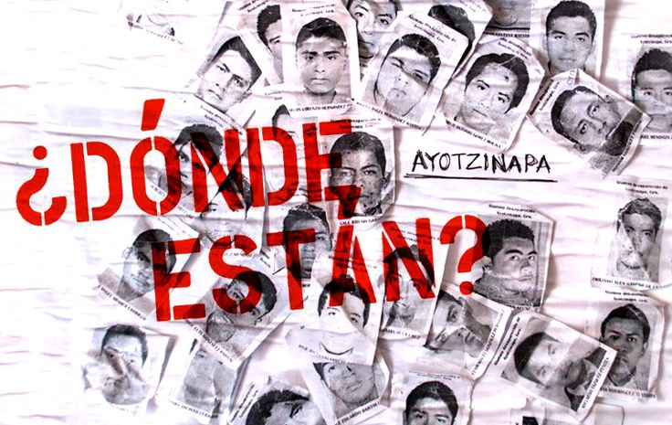
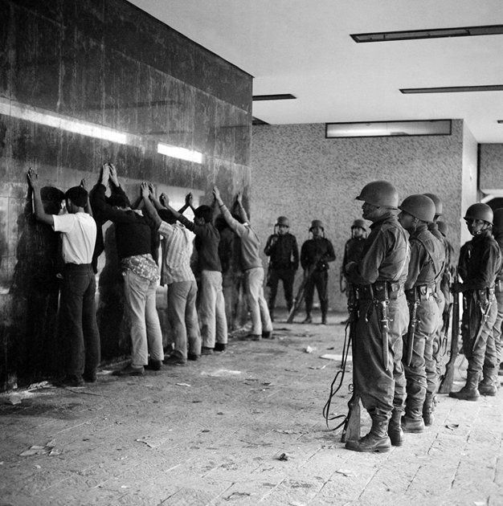
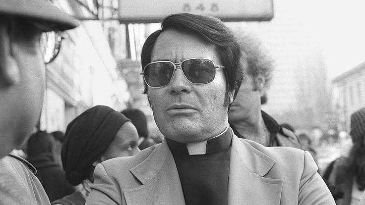

Los 43 de Ayotzinapan
La noche del 26 de septiembre de 2014, 43 estudiantes desaparecieron en Iguala en medio de una serie de ataques contra estudiantes. El caso provocó indignación nacional e internacional y dio origen a numerosas movilizaciones que exigían conocer su paradero y esclarecer lo sucedido. Ayotzinapa se convirtió en un símbolo de la exigencia de verdad, justicia y respuestas para las familias de las personas desaparecidas.
Ver más
La matanza de tlatelolco
El 2 de octubre de 1968, la Plaza de las Tres Culturas, en Tlatelolco, Ciudad de México, fue escenario de una represión violenta contra estudiantes y manifestantes que participaban en el movimiento estudiantil. Durante el acontecimiento, fuerzas del Estado abrieron fuego y numerosas personas murieron o resultaron heridas. La matanza se convirtió en uno de los episodios más dolorosos de la historia contemporánea de México y en un símbolo de la lucha por la libertad de expresión, la justicia y los derechos humanos.
Ver más
LA TRAGEDIA DE JONESTWON
La tragedia de Jonestown ocurrió el 18 de noviembre de 1978 en Guyana, Sudamérica, donde más de 900 personas pertenecientes al grupo religioso Peoples Temple, dirigido por Jim Jones, murieron en un suceso que conmocionó al mundo.El caso dejó profundas preguntas sobre la manipulación psicológica, el fanatismo y la influencia que una persona puede ejercer sobre cientos de seguidores.
Ver más